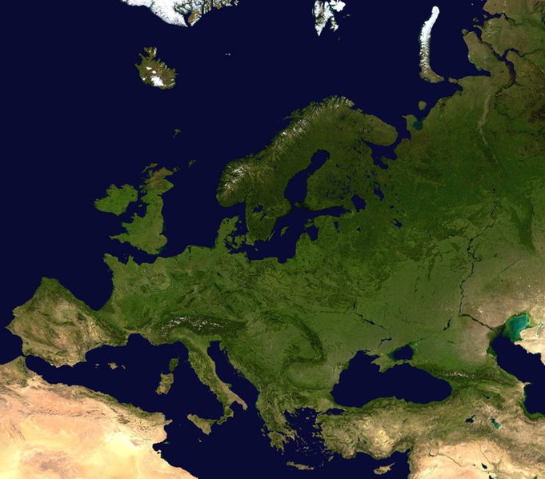

|  | Europa es uno de los seis continentes del mundo y el quinto más extenso. Limita al norte con el océano Ártico, al sur con el mar Mediterráneo, el mar Negro y el mar Caspio, al este con los montes Urales y al oeste con el océano Atlántico. Tiene una superficie aproximada de 10 millones de kilómetros cuadrados, lo que representa el 6,8 % del total de la superficie terrestre del planeta. En Europa se encuentran algunas de las principales potencias económicas y políticas a nivel mundial como Gran Bretaña, Francia y Alemania. Este continente es también sede de algunas de las ciudades más importantes de la historia, y actualmente algunas de las más visitadas de todo el mundo, como Londres y Manchester en Gran Bretaña, Madrid y Barcelona en España, Berlín en Alemania y París en Francia. |
| Características de Europa El clima varía según la extensión geográfica: es templado en las cercanías del mar Mediterráneo y es frío polar en el norte del continente. Presenta una gran variedad de relieves: llanuras, como en el centro de Rusia, mesetas elevadas, como en el norte de Gran Bretaña, y cadenas montañosas y volcánicas, como los Alpes suizos. Presenta el fenómeno de envejecimiento progresivo de la población, que ocurre por la combinación de dos factores: aumento de la expectativa de vida y disminución en la cantidad de hijos. Está conformado por un complejo conjunto de sociedades y Estados históricamente enfrentados por conflictos sociales, culturales y económicos, por lo que tienen una larga tradición de guerras y disputas territoriales. Se hablan unos 200 idiomas y dialectos locales. Los idiomas con mayor cantidad de hablantes son: ruso, alemán, francés, turco, inglés, italiano y español. | |